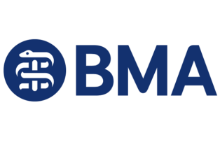
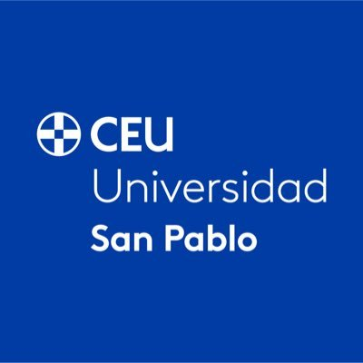
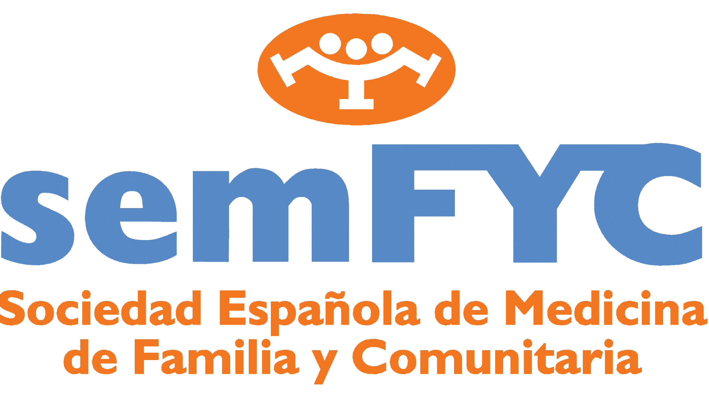

Curso Experto en Humanismo y Bienestar Profesional en la Medicina del Siglo XXI:
Entre Hipócrates
y el Algoritmo.
El Renacimiento Humanista de la Medicina. Una propuesta de vanguardia para redefinir la identidad del clínico en la era tecnológica.
"La medicina no es solo una ciencia, es un arte que requiere la mirada del alma."
La Paradoja de la Modernidad:
Más Precisión, Menos Presencia.
El impacto silente de la tecnificación en la salud del profesional sanitario.
Propugnamos una medicina donde el algoritmo no sustituye la mirada, sino que la libera.
Cuidar al que Cuida: Un Compromiso Institucional.
De la formación residente a la dirección de servicio.
Médicos MIR
Blindando su vocación desde el inicio frente al choque con la realidad sistémica.
Especialistas
Proveyendo herramientas de resiliencia diaria para prevenir la fatiga por compasión.
Tutores FSE
Capacitándoles para liderar desde un humanismo que inspire a las nuevas generaciones.
Direcciones
Facilitando la gestión de equipos basada en la sostenibilidad del talento humano.
Excelencia en el Acompañamiento.
Sinergia con el Modelo EAPS.
"Nuestra propuesta académica expande el horizonte de los Equipos de Atención Psicosocial (EAPS). Al profundizar en el manejo multidimensional del 'Dolor Total', dotamos a los profesionales de la solvencia necesaria para el acompañamiento en el final de la vida."
Fortaleciendo la respuesta ante el Sufrimiento Total.
Aseguramos la integridad emocional de quienes sostienen el final de la vida, protegiéndoles frente al estrés traumático secundario mediante técnicas de autoconsciencia y resiliencia institucional.
Un Recorrido por la Identidad Clínica Moderna.
6 Módulos diseñados para la práctica real.
Estructura el curso como una respuesta por capas a las causas del agotamiento médico y la deshumanización asistencial.
Redescubrir la fides hipocrática frente a la deshumanización técnica y los retos bioéticos contemporáneos.
Programa Académico
- play_arrow Porqué Hipócrates en el S.XXI
- play_arrow Antropología Médica: De la Biología a la Biografía
- play_arrow El Juramento Hipocrático: Vigencia y Actualización
- play_arrow La Relación Médico-Paciente como "Amistad Médica"
- play_arrow La Excelencia Técnica como Deber Ético
Maestría en comunicación clínica, protocolos de malas noticias y optimización de la toma de decisiones compartidas.
Programa Académico
- play_arrow La Entrevista Clínica Avanzada
- play_arrow Protocolos de Comunicación de Malas Noticias
- play_arrow Comunicación No Verbal y Gestión del Silencio
- play_arrow El Paciente "Difícil" y la Gestión de Conflictos
- play_arrow Toma de Decisiones Compartida (SDM)
Abordaje integral del Sufrimiento Total y el imperativo ético de consolar en escenarios de alta intensidad emocional.
Programa Académico
- play_arrow Cuidados Paliativos vs. Obstinación Terapéutica
- play_arrow El Dolor Total (Total Pain)
- play_arrow Acompañamiento Espiritual en la Clínica
- play_arrow Comunicación con la Familia y Gestión del Duelo
- play_arrow Voluntades Anticipadas y Planificación de Cuidado
Medicina del estilo de vida y prevención activa del Burnout mediante estrategias de resiliencia personal e institucional.
Programa Académico
- play_arrow El "Sanador Herido": Vulnerabilidad y Límites
- play_arrow Burnout y Fatiga por Compasión
- play_arrow El Error Médico y las Segundas Víctimas
- play_arrow Trabajo en Equipo y Liderazgo Humanista
- play_arrow Resiliencia, Vocación y Sentido
Bioética algorítmica y la Inteligencia Artificial como aliada humanista para liberar el tiempo de cuidado asistencial.
Programa Académico
- play_arrow La IA como Aliada del Juramento Hipocrático
- play_arrow Recuperar la Mirada: La IA en la Consulta Diaria.
- play_arrow Precisión Diagnóstica, Incertidumbre y Evidencia
- play_arrow Integración Tecnológica y Responsabilidad Moral
- play_arrow Lo Irreemplazable: El Arte de Curar en la Era Digital
La sensibilidad artística y las artes como herramientas de observación clínica superior y gestión emocional.
Programa Académico
- play_arrow Introducción a la Medicina Narrativa
- play_arrow Patografías: La Enfermedad Contada por el Paciente
- play_arrow Cinefórum Médico: La Mirada del Otro
- play_arrow Escritura Reflexiva y el "Diario del Médico"
- play_arrow Humanidades Médicas: Arte y Literatura
Metodología Lean: Alto Impacto, Tiempo Optimizado.
Huimos de la teoría estática. Nuestra metodología combina el rigor académico con formatos audiovisuales premium diseñados para integrarse en la saturada agenda del clínico.
-
theater_comedy
Role Play Audiovisual
Entrenamiento en situaciones clínicas críticas con feedback experto y análisis inmersivo.
-
auto_stories
Contenidos de Clase Mundial
Recursos integrados de la Universidad de Stanford y la British Medical Association (BMA).
-
bolt
Flexibilidad Sistémica
Micro-cápsulas de conocimiento de alto impacto académico optimizadas para agendas asistenciales.

Estándar de CalidadEstructura de Gobernanza y Autoridad.
Un cuadro docente que lidera la medicina española.
Dr. Tomás Chivato
Decano Facultad Medicina Universidad CEU San Pablo. Madrid.
Vicepresidente del Consejo de Decanos de Medicina.
Dr. Juan Antonio Vargas
Ex Decano de la Facultad de Medicina de la Universidad Autónoma de Madrid.
Jefe de servicio de Medicina Interna del Hospital Universitario Puerta de Hierro. Majadahonda. Madrid.
Dr. Eduardo de Teresa
Catedrático, Director de la Catedra de Terapias Avanzadas en Cardiología. Universidad de Málaga.
Profesor emérito. Facultad de Medicina. Universidad de Málaga. Ex presidente de la Sociedad Española de Cardiología.
Dr. Antonio Pilas Mesa
Profesor Titular de Historia y Pensamiento. Facultad de Humanidades y Ciencias de la Comunicación. Universidad CEU San Pablo. Madrid.
Dr. Arcadi Gual
Catedrático de Fisiología de la Universidad de Barcelona, Director de SEAFORMEC. Rector de la Universitat Abat Oliba CEU. Barcelona.
Dr. Pere Gascón
Catedrático, director de la cátedra CELLEX de Oncología y del Conocimiento Multidisciplinar. Ex jefe del Servicio de Hematología y Oncología en la Facultad de Medicina del Estado de New Jersey. USA. Ex jefe del Servicio de Oncología Médica y Coordinador Científico del Instituto Clínico de Enfermedades Hemato-Oncológicas del Hospital Clínic de Barcelona.
Dra. Pilar López
Catedrática de Psiquiatría. Facultad de Medicina. Universidad Autónoma de Madrid. Decana de la Universidad Autónoma de Madrid.
Dr. Javier Segovia
Catedrático de Cardiología. Facultad de Medicina. Universidad Autónoma de Madrid. Jefe del servicio de Cardiología. Hospital Universitario Puerta de Hierro. Majadahonda. Madrid.
Dr. Julio Mayol
Catedrático de Cirugía. Universidad Complutense de Madrid. Director del Instituto de investigación Sanitaria Hospital Clínico San Carlos. Madrid.
Dr. José María de la Torre
Ex vicepresidente de la Sociedad Española de Cardiología. Jefe de Cardiología de Hospital Universitario Marqués de Valdecilla. Santander.
Con el aval de:


Efecto
Hygeia
Buscamos una alianza estratégica por la sostenibilidad del talento médico y la excelencia de la atención humana.